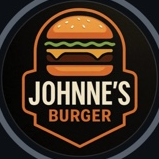
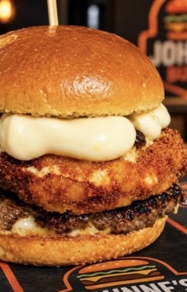

EM DESTAQUE
Burger especial
Para quem gosta de um burger caprichado, do pão ao recheio.
Valor sob consultaConsultar

JOHNNE’SBURGER TupinambáGuarulhos, SPJOHNNE’S BURGER
A fome pede um burger.
Você pede Johnne’s.

O SEU BURGER, DO SEU JEITO
Direto com a gente ou pelo seu app favorito.
Você escolhe como a Johnne’s chega até você.
DAQUI DE GUARULHOS
Rua Gentio do Ouro, 286
Tupinambá · Guarulhos, SP
Consulte a área de entrega e os horários
de atendimento pelo WhatsApp.